Od zera do rewolwera
O broni palnej, pozwoleniach i strzelectwie, po ludzku i bez zadęcia
Krok 10: sejf do przechowywania broni
18 listopada 2019, Mikołaj Bartnicki
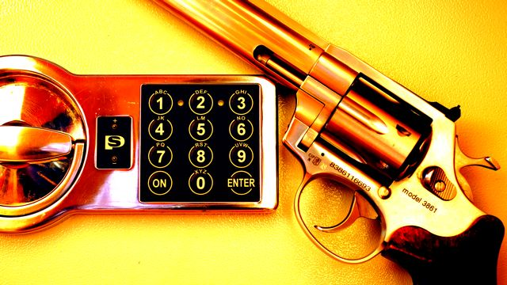
Rewolwer Alfa Stainless 3861 .38 Special
Zanim kupisz swoją pierwszą broń, musisz mieć odpowiednie warunki do jej przechowywania. Przepisy nakazują trzymanie broni w sejfie odpowiedniej klasy. Ostatnim krokiem na drodze od zera do rewolwera jest zakup takiego właśnie sejfu.
Krok 9: kontrolna wizyta dzielnicowego
1 listopada 2019, Mikołaj Bartnicki
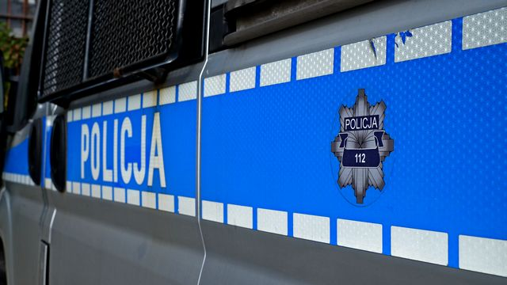
Policyjny radiowóz
Wkrótce dostaniesz pozwolenie na broń. Zanim to jednak nastąpi, będziesz miał okazję odbyć krótką, przyjacielską rozmowę ze swoim dzielnicowym, który wpadnie do ciebie z kurtuazyjną wizytą. Nie ma powodów do obaw, ale warto wiedzieć, czego się spodziewać.
Krok 8: podanie o pozwolenie na broń
27 października 2019, Mikołaj Bartnicki

Pistolet XDs .45 Auto
Spełniłeś wszystkie warunki oraz wykonałeś niezbędne kroki w kierunku posiadania broni palnej. Teraz pozostało ci tylko wskoczyć do paszczy lwa, czyli wreszcie złożyć na Policji podanie o pozwolenie na broń.
Krok 7: orzeczenie lekarza i psychologa
25 września 2019, Mikołaj Bartnicki

Fragment pozytywnego orzeczenia lekarskiego
Przed tobą drugie spotkanie z lekarzem: badania do pozwolenia na broń. Uprzednia wizyta u lekarza sportowego była tylko lekką rozgrzewką. Prawdziwa medycyna zaczyna się teraz!
Krok 6: licencja zawodnicza
15 sierpnia 2019, Mikołaj Bartnicki

Chorwacki pistolet XDM 9x19
Od teraz oficjalnie będziesz strzelcem sportowym. Uzyskanie pierwszej licencji zawodniczej jest bardzo łatwe. Późniejsze jej utrzymanie, choć wymaga pewnego minimum uwagi, również nie stanowi trudności. Witaj zatem w gronie zawodników PZSS!
Krok 5: egzamin na patent strzelecki
17 czerwca 2019, Mikołaj Bartnicki
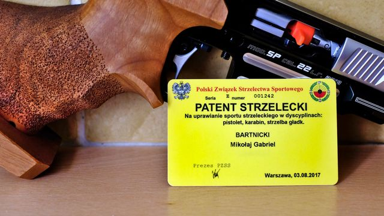
Patent Strzelecki PZSS
Kluczowy krok ku własnej broni palnej. Najważniejszy i najbardziej stresujący. Budzący spore emocje, mętne domysły, plotki. Ten moment w końcu nadszedł: musisz przystąpić do egzaminu na patent strzelecki! Na czym on polega? Jak w praktyce wygląda?
Krok 4: badania medycyny sportowej
17 czerwca 2019, Mikołaj Bartnicki
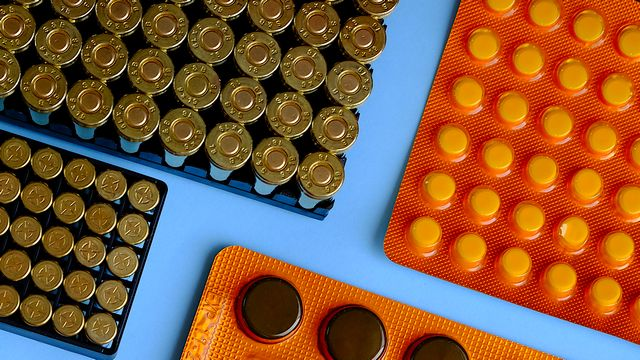
Amunicja .22 Long Rifle oraz 9 mm Parabellum
Pierwsze spotkanie z lekarzem na drodze do pozwolenia na broń, to badania z zakresu medycyny sportowej. Ta wizyta to czysta formalność. O ile tylko rozsądnie wybierzesz lekarza, to nic nie może tutaj pójść źle.
Krok 3: przygotowanie do egzaminu
12 maja 2019, Mikołaj Bartnicki
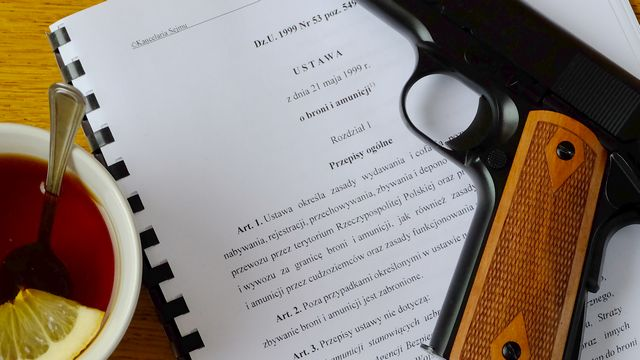
Pistolet Tisas ZIG M1A1 9x19, turecka kopia Colta 1911
Egzamin na patent strzelecki jest znacznie łatwiejszy i tańszy niż egzamin policyjny. Mimo to, warto dobrze się do niego przygotować. Tym bardziej, że wciąż niemało kosztuje, więc szkoda ryzykować wydanych pieniędzy.
Krok 2: stowarzyszenie kolekcjonerskie
17 kwietnia 2019, Mikołaj Bartnicki
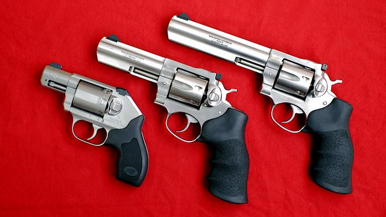
Rewolwery .357 Magnum: Kimber K6s (najmniejszy) oraz Ruger GP100 (dwa większe)
Zostań kolekcjonerem broni palnej, to naprawdę bardzo łatwe! Zwłaszcza, że w przeciwieństwie do klubu sportowego, wybór odpowiedniego stowarzyszenia jest trywialny. Skoro temat jest względnie prosty, to dzisiejszy wpis nie będzie długi.
Krok 1: strzelecki klub sportowy
9 kwietnia 2019, Mikołaj Bartnicki
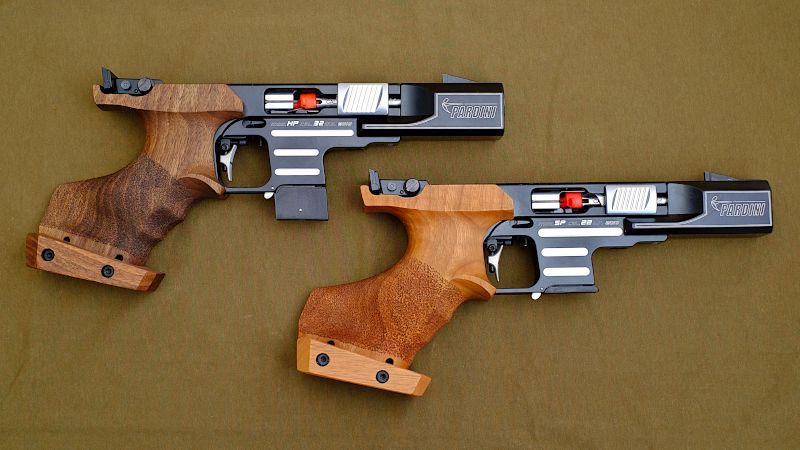
Pardini HP oraz SP - włoskie pistolety sportowe klasy olimpijskiej
Zrób pierwszy krok ku własnej broni palnej: zapisz się do strzeleckiego klubu sportowego! Niestety, wybór klubu jest prosty tylko pozornie. W dziadowskich realiach polskiego strzelectwa, łatwo o błędną decyzję.
Broń bez pozwolenia
20 marca 2019, Mikołaj Bartnicki
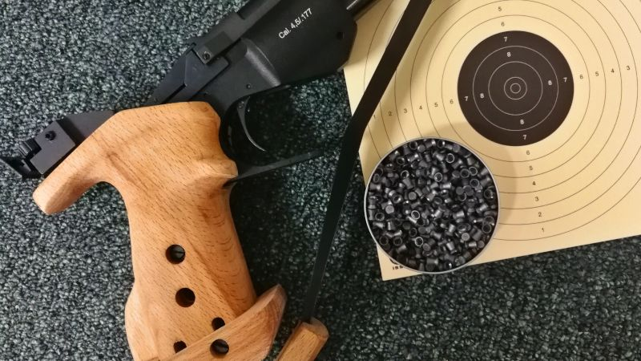
Rosyjski pistolet pneumatyczny Iż-46M
Nawet bez pozwolenia na broń, droga do strzelectwa nie jest całkowicie zamknięta. Polskie prawo przewiduje kilka całkiem sensownych alternatyw. W oczekiwaniu na własne pozwolenie, warto z nich skorzystać.
Dziesięć kroków do własnej broni palnej
17 lutego 2019, Mikołaj Bartnicki

Tarcza do strzelania z karabinu sportowego
Procedura zdobycia pozwolenia na broń palną to tylko dziesięć prostych kroków do wykonania. Jeśli tylko wytrzymasz pół roku oczekiwania przeplatanego biurokracją, to wymarzona broń będzie twoja!
Twój prywatny arsenał
16 lutego 2019, Mikołaj Bartnicki
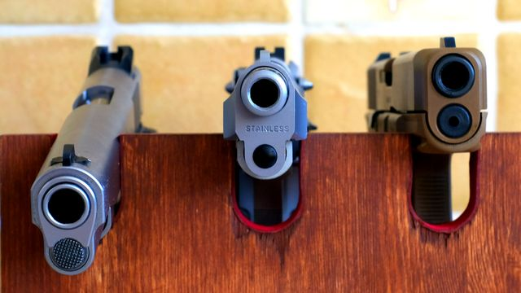
Pistolety Ruger SR1911, Beretta 92FS oraz Glock 19X
W Polsce można względnie łatwo zdobyć pozwolenie na broń sportową oraz kolekcjonerską. Dzięki temu można legalnie posiadać praktycznie każdą współczesną broń palną, łącznie z tą używaną przez wojsko lub policję.
Cel posiadania broni
2 lutego 2019, Mikołaj Bartnicki

Naboje .22 Long Rifle, 9 mm Parabellum, .45 Auto, .38 Special oraz .357 Magnum
Ustawowy katalog pozwoleń na broń jest całkiem spory. O jakie pozwolenie warto się starać, a które lepiej sobie odpuścić? Jest z czego wybierać, ale na szczęście wybór ten nie jest trudny.
Nie każdy może mieć broń
13 stycznia 2019, Mikołaj Bartnicki
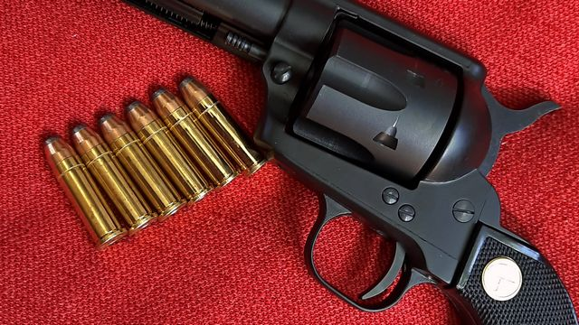
Rewolwer Chiappa Regulator .38 Special, włoska kopia Colta SAA
Kasandryczne wizje pełne różnych szaleńców oraz bandytów, swobodnie zaopatrujących się w broń palną, nie mają żadnego odzwierciedlenia w rzeczywistości. Oto dlaczego.
Pierwsze spotkanie z UoBiA
19 stycznia 2019, Mikołaj Bartnicki

Pistolet Ruger SR1911 .45 Auto
Wszystko, co dotychczas wiedziałeś na temat posiadania broni w Polsce, to nieprawda. Zmiana przepisów w 2011 roku odblokowała dostęp do broni palnej dla prawie każdego dorosłego Polaka. Jednak wciąż mało kto jest tego świadom.
Zaproszenie
13 stycznia 2019, Mikołaj Bartnicki
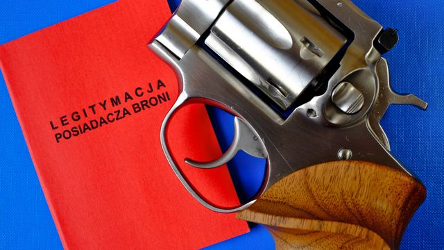
Rewolwer Ruger GP100 .357 Magnum
Dawno już minęły czasy, w których pozwolenie na broń było dostępne wyłącznie dla wąskiej elity krewnych i znajomych aparatu państwowego. Dzisiaj prawie każdy może legalnie nosić pistolet, strzelectwo jest przystępnym i bezpiecznym sportem, zaś liczba kolekcjonerów broni stale rośnie.